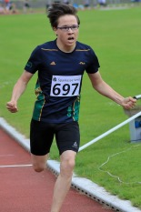

EIN KREISREKORD, EINE JAHRESBESTLEISTUNG UND VIELE QUALIS = HOHENHORST-MEETING 2019

Zum Glück für alle Beteiligten fand das 42. Hohenhorst-Meeting am Pfingstmontag bei bestem LA-Wetter statt, die angekündigten Gewitter und Regenschauen blieben aus und so konnten die angereisten insgesamt 511 Athleten ihre 1100 Starts zeitplangerecht angehen, wobei gleichzeitig die Bezirks- und Kreismeisterschaften der AKs U16 – Senioren ausgefochten wurden.